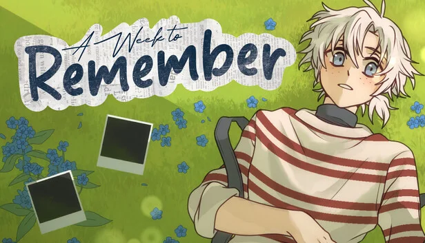
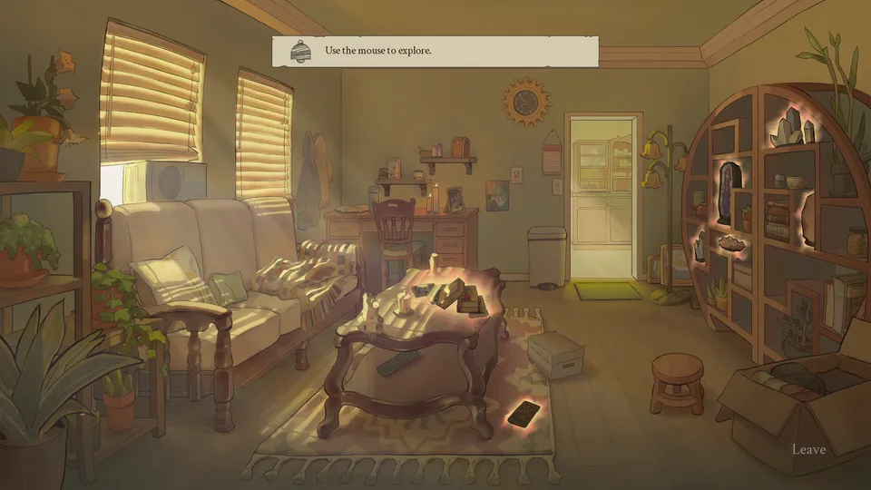

A Week to Remember
Visual novel comercial em Ren'Py/Python, em alfa, com quase 500 wishlists na Steam e lançamento previsto para 2027. Sou o único desenvolvedor de um time de 10 pessoas, a maioria artistas, e fiz 504 dos 541 commits.
- Escolhas com checagem de afinidade: 5 finais até agora, numa estrutura para mais de 20.
- Minijogo de feitiçaria com física de mola-amortecedor própria (o Ren'Py não tem física), exploração point-and-click e um celular funcional.
- Suporte completo a controle no critério da Steam; achei 8 comportamentos não documentados lendo o código-fonte do Ren'Py.
- Acessibilidade: texto alternativo, 4 modos de daltonismo, fontes para dislexia, alto contraste, legendas e avisos de gatilho.
- Easter egg no celular: um menu estilo Nokia com Snake jogável.
- Localização com PT-BR e ES-LatAm prontos e bases de mais 8 idiomas geradas por script para os tradutores.
Ren'Py · Python · Steamworks · C# · PowerShell · Git · Scrum